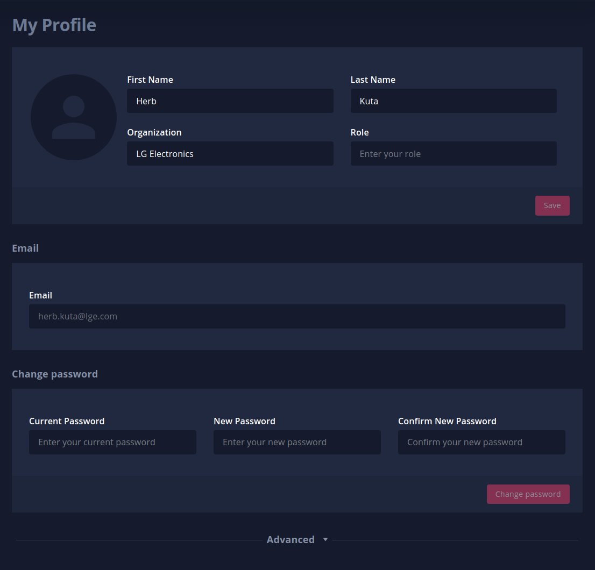

Local Automation (CI/CD)#
Table of Contents
Overview top#
Local Automation allows you to start, check on, and, if necessary, stop simulation jobs from scripts without needing to manually interact with the web user interface. This empowers you to integrate SVL Simulator with existing automated testing or CI workflows (for example, Github/Gitlab integration, or Jenkins). Note that you will still need to use the web user interface to create and setup simulations beforehand.
A POSIX shell script downloaded from the web user interface wraps the usage of a container pulled from there in which the actual client resides. Access is authenticated and authorized via an access token that you must generate using the web user interface.
Tutorial top#
For step-by-step instructions on running simulations using the local automation tool, see our local automation tutorial.
Local Automation Commands top#
The following commands are available:
| Entity | Command | Arguments | Description |
|---|---|---|---|
cli |
initialize |
Initialize a CLI session | |
cleanup |
Cleanup anything cached by the CLI session | ||
help |
Output details about the commands | ||
simulation |
start |
SIMULATION-ID | Start a simulation |
check |
SIMULATION-ID | Check on a simulation | |
stop |
SIMULATION-ID | Stop a simulation | |
help |
Output details about the commands |
simulation check returns one of these values upon success:
| Value | Description |
|---|---|
progressing |
The simulation has been started and is progressing. |
success |
The simulation has completed; this is the status of its last test result. |
failure |
The simulation has completed; this is the status of its last test result. |
error |
The simulation has completed; this is the status of its last test result. |
virgin |
There is no last test result because the simulation has never been run. |
unknown |
Unable to determine. |
The other commands return nothing upon success.
Upon error, the commands return a message suitable for printing, but not parsing because it's not guaranteed to be stable across releases. The errors detected include:
- Access to SIMULATION-ID not allowed
- Cluster not online
- Invalid access token
- Malformed SIMULATION-ID
- Non-existent SIMULATION-ID
- Simulation already running
The HTTP response status code is not exposed.
Prerequisites top#
The wrapper script requires the docker.io and python3-minimal packages. If there's no output from command -v docker, install it by
running:
sudo apt update && sudo apt install --no-install-recommends docker.io
If there's no output from command -v python3, install it by running:
sudo apt update && sudo apt install --no-install-recommends python3-minimal
Generating an Access Token top#
As mentioned in Overview, an access token is needed in order to use Local Automation. Follow the instructions below to generate one.
-
Click on your name in the upper righthand corner and select My Profile 
-
Expand the Advanced section and scroll down to Access Token for Local Automation:
-
Name or describe what the token will be used for in Note and press Create:
-
Make sure to retain a copy of your access token. Treat it as a password -- anyone who has it can access your simulations using Local Automation.
{kind=link}
{kind=link}
{kind=link}
{kind=link}
Wrapper Script top#
Download the wrapper script svlsim.shfrom the web user interface:
wget -nv https://wise.svlsimulator.com/scripts/svlsim.sh
It is intended that svlsim.sh be checked into your source control as a peer of your CI/CD scripts. cli initialize will fail if svlsim.sh needs to be updated (by re-downloading).
Usage Pattern top#
This is the pattern for executing a command:
export SVLSIM__ACCESS_TOKEN="<ACCESS-TOKEN>"
# SVLSIM__LOG_FORMAT defaults to "[%(levelname)6s] [%(name)s] %(message)s", the same as
# that used by the "lgsvl" module (aka "Python API").
# export SVLSIM__LOG_FORMAT="<PYTHON_LOG_FORMAT>"
# SVLSIM__LOG_LEVEL defaults to "INFO".
# export SVLSIM__LOG_LEVEL="<PYTHON_LOG_LEVEL>"
...
if result=$(sh svlsim.sh ENTITY COMMAND [ARG ...] 2>> LOGFILE); then
: SUCCESS
# ${result} is a single return value.
else
: ERROR
# ${result} is an error message suitable for printing (but not parsing).
fi
Information suitable for logging is written to stderr. The format of what's logged can be altered by setting the SVLSIM__LOG_FORMAT environment variable to a Python 3 logging format string formed from these attributes. The logging level can be altered by setting SVLSIM__LOG_LEVEL to one of these levels. The logging message that's written is not guaranteed to be stable across releases and should not be parsed.
There is no connection timeout: svlsim.sh will wait forever for the response from the web user interface.
Running a Simulation top#
A script to run a simulation should look something like what follows below. You must have created the simulation using the web user interface and it must be ready to run, ie, it must be valid and the cluster on which it will run must be online.
export SVLSIM__ACCESS_TOKEN="<ACCESS-TOKEN>"
# export SVLSIM__LOG_FORMAT="<PYTHON_LOG_FORMAT>"
# export SVLSIM__LOG_LEVEL="<PYTHON_LOG_LEVEL>"
logfile="<PATH-TO-LOGFILE>"
simulation_id="<UUID taken from the web user interface>"
# If desired, cleanup anything cached by the CLI session, eg, the container image.
# A successful "cli cleanup" outputs nothing. We recommend that you use Bash so that
# "trap 0" will catch exits caused by signals.
# trap 'result=$(sh svlsim.sh cli cleanup 2>> ${logfile}) || echo "ERROR: ${result}"' 0
# Initialize a CLI session. A successful "cli initialize" outputs nothing.
if result=$(sh svlsim.sh cli initialize 2> ${logfile}); then
: SUCCESS
else
# One error will be that svlsim.sh is out-of-date and needs to be re-downloaded.
echo "ABORT: ${result}"
exit 1
fi
# Start a simulation and return immediately. A successful "simulation start" outputs
# nothing. This command does not wait in order to allow a CI script to launch multiple
# (different) simulations simultaneously.
if result=$(sh svlsim.sh simulation start ${simulation_id} 2>> ${logfile}); then
: SUCCESS
else
echo "ABORT: ${result}"
exit 1
fi
# Check on the simulation until it's finished. "simulation check" outputs one of:
# - progressing
# - success
# - failure
# - error
# - virgin
# - unknown
while true; do
# Wait time is arbitrary.
sleep 2
if status=$(sh svlsim.sh simulation check ${simulation_id} 2>> ${logfile}); then
if [ ${status} != "progressing" ]; then
break
fi
else
echo "ABORT: ${status}"
exit 1
fi
done
You must use the web user interface to view the test results or see the message associated with the error status.
Running Multiple Simulations Sequentially top#
To run multiple simulations sequentially, replace the simulation start and simulation check blocks from above with:
simulations="<SIMULATION-ID-1> <SIMULATION-ID-2> ..."
for simulation_id in ${simulations}; do
(
if result=$(sh svlsim.sh simulation start ${simulation_id} 2>> ${logfile}); then
: SUCCESS
else
echo "ERROR: ${simulation_id}: ${result}"
exit 1
fi
while true; do
# Wait time is arbitrary.
sleep 2
if status=$(sh svlsim.sh simulation check ${simulation_id} 2>> ${logfile}); then
if [ ${status} != "progressing" ]; then
break
fi
else
echo "ERROR: ${simulation_id}: ${status}"
exit 1
fi
done
)
done
Running Multiple Simulations Simultaneously top#
To run multiple simulations simultaneously, replace the simulation start and simulation check blocks from above with:
# Note that this has been written for Bash.
declare -r simulations="<SIMULATION-ID-1> <SIMULATION-ID-2> ..."
# Start all of the simulations.
declare -A running_simulations=()
for simulation_id in ${simulations}; do
if result=$(sh svlsim.sh simulation start ${simulation_id} 2>> ${logfile}); then
running_simulations[${simulation_id}]="started"
else
echo "ERROR: ${simulation_id}: ${result}"
# Or stop the others that were previously started and abort?
fi
done
# Check those that are (still) running.
while ${#running_simulations[*]} -gt 0; do
# Wait time is arbitrary.
sleep 2
for simulation_id in ${running_simulations}; do
if status=$(sh svlsim.sh simulation check ${simulation_id} 2>> ${logfile}); then
if [ ${status} = "progressing" ]; then
running_simulations[${simulation_id}]=${status}
else
echo "${simulation_id} done: ${status}"
unset running_simulations[${simulation_id}]
fi
else
echo "ERROR: ${simulation_id}: ${status}"
unset running_simulations[${simulation_id}]
fi
done
done
Stopping a Simulation top#
To stop a running simulation, run:
# A successful "simulation stop" outputs nothing. The command returns immediately.
# You should use "simulation check" to discover when the simulation has completed.
if status=$(sh svlsim.sh simulation stop ${simulation_id} 2>> ${logfile}); then
: SUCCESS
else
echo "ABORT: ${status}"
exit 1
fi